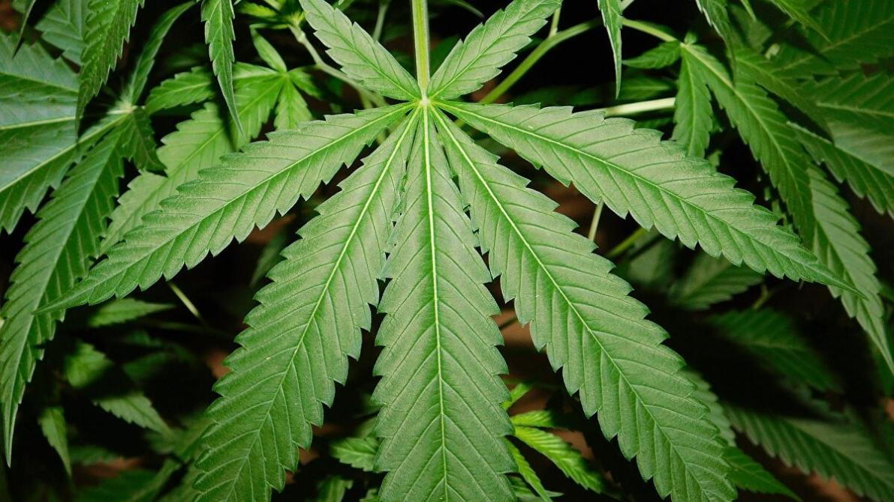
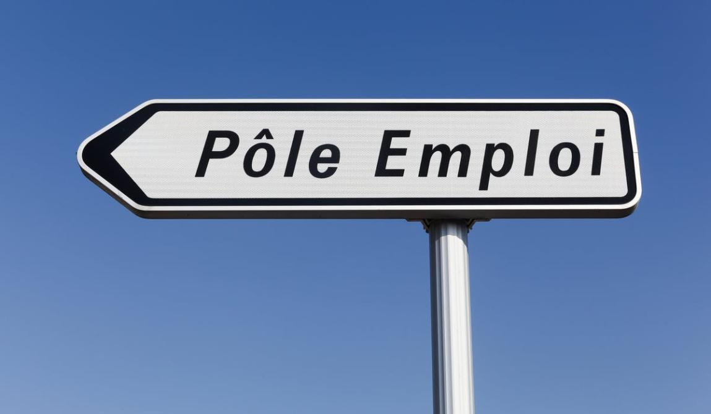
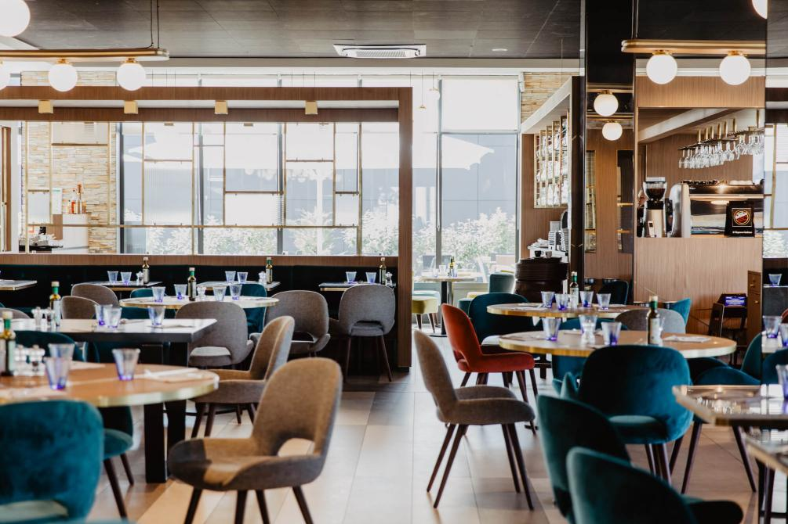

Ce journaliste a la démarche suivante : en Outre-Atlantique, le taux de chômage s'est envolé à 14,7% fin avril. C'est un record historique car près de 36 millions d'américains nt fait une demanded'allocation chômage. Le business du cannabis
légal a permis au était l'ayant légalisé de conserver un bon nombre d'emploi et de recttes fiscales. En effet, le secteur du cannabis resprésente 250 000 emplois aux Etats-Unis alors qu'il n'est légal que dans 12 états. Après certains
calculs, la légalisation complète aux Etats-Unis permettrait de créer 1,6 millions d'emplois et de générer 128,8 milliards de dollars de revenus fiscaux. Il ne s'agirait pas d'un remède miracle face à la chute de notre économie, mais
un moyen non-négligeable de contribuer à se relever.

Le nombre d'inscrits à Pôle emploi en catégorie A (sans activité) a bondi de 843.000 personnes le mois dernier, a annoncé ce jeudi le ministère du Travail. Cette hausse exceptionnelle de 22,6 % par rapport à mars s'explique pour les trois
quarts par une bascule des chômeurs déjà inscrits en activité réduite.Des chômeurs plus nombreux, malgré l'amortisseur massif de l'activité partielle , et surtout de plus en plus « à temps plein ».Il s'agit d'un record absolu depuis
le début de la mesure en 1996, et qui porte les effectifs de cette catégorie, la plus scrutée, à 4,57 millions de personnes ! Toutes les tranches d'âges sont concernées, de même que toutes les régions. A noter toutefois que les hommes
paient un plus lourd tribut.

Avec un million d’actifs, un chiffre d’affaires de 78 milliards d’euros (7% du PIB), le secteur des cafés-hôtels-restaurants-discothèques (CHRD) est le plus grand pourvoyeur d’emplois de France. Aujourd’hui, c’est celui qui paie le plus
lourd tribut à l’épidémie de coronavirus. Depuis le 14 mars 2020 les 147.100 entreprises de restauration, les 48.200 débits de boissons et 4.500 établissements de nuit sont à l’arrêt. Les pertes d’exploitation sont colossales. Elles
se comptent en milliards d’euros. Nombreux sont ceux qui ne survivront pas. Les professionnels du secteur se tournent vers leurs assurances. Dans une pétition en ligne le chef Stéphane Jégo (restaurant parisien L’Ami Jean) demande
au ministre de l’Économie Bruno Le Maire et au gouvernement de « décréter l’état de catastrophe naturelle sanitaire afin que les assurances nous indemnisent. »